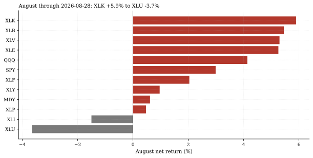
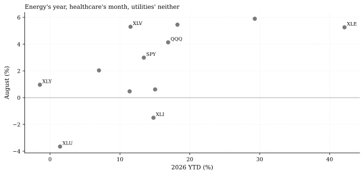
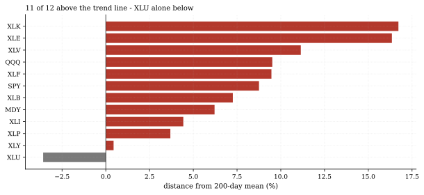

The one-paragraph version. August through Friday (month base = July's close, compounded daily) splits the sector book by 9.5 points: tech leads at +5.90%, with materials (+5.45%), health care (+5.30%) and energy (+5.26%) packed just behind it; industrials (-1.50%) and utilities (-3.65%) anchor the bottom. SPY added +2.99% and mid-caps (+0.62%) lagged the cap-weighted index. The trend picture is even more one-sided: 11 of the book's 12 tickers sit above their 200-day means, with utilities alone below (-3.6% under its trend line) - and energy, running in the chasing pack this month, is having the year at +42.1% year-to-date. The defensive-versus-cyclical frame that organized Sector Lab #1 does not survive this month intact: this was a barbell month, hard assets and health care up top, rate-sensitives at the bottom, and the middle mixed.
How we worked this problem
Sector Lab issue 2 reads the sector book (nine classic SPDRs plus SPY/QQQ/MDY) refreshed through Friday August 28 this cycle. The scoreboard compounds daily returns from the prior month's close - the standard month-return convention (a naive first-close-to-last-close ratio silently drops the month's first session, which mattered here: that session alone moved SPY by +1.42%). Every figure is code-computed into this note's numbers.json; the house-vs-house cross-check runs the same August convention on the core 16-ETF panel's SPY and matches to the basis point (both books read +2.99%, difference 0.0000).
The data audit
| Source | Coverage | As-of | Role |
|---|---|---|---|
data/cache_sector_2007_2026.parquet | 12 tickers, daily OHLCV (refreshed this cycle) | 2026-08-28 | the scoreboard, trend distances |
data/cache_panel_2007_2026.parquet | core 16-ETF panel (SPY) | 2026-08-28 | house-vs-house cross-check |
The month has one session remaining (Monday August 31); all figures are month-to-date through Friday. The FRED rates cache (as-of 2026-08-13) and the funding cache (as-of 2026-07-31) are not used.
The external read
Sector scorecards are the practitioner month-end staple: Schwab publishes a monthly 11-sector outlook with performance and concentration statistics (Schwab sector views), and breadth-and-momentum dashboards track the same leader/laggard structure continuously (StreetStats). Our external search this cycle surfaced only single-day sector prints for late August (and no month-recap links carrying numbers we could attribute), so the quantitative cross-check here is house-versus-house: two independently fetched books agreeing on SPY's August to the basis point, while the external qualitative frame - energy's standout year, utilities' lag - matches our own YTD table.
Exhibits
Exhibit 1 - the scoreboard. XLK +5.90% at the top, XLU -3.65% at the bottom, 9.55 points apart; the top four (XLK, XLB, XLV, XLE) sit within 0.7 points of each other, and only industrials joins utilities below zero.

Exhibit 2 - the month against the year. Plotting August against YTD: energy is the year's outlier (+42.1% YTD, a strong-but-not-dominant month); health care pairs a strong year (+11.5%) with a strong month; tech and materials ride the August leadership; utilities own neither (+1.4% YTD, worst month); QQQ's +4.13% August on +16.9% YTD marks the growth complex's quiet reassertion.

Exhibit 3 - the trend state. Eleven of twelve above the 200-day mean, utilities alone below at -3.6% under its trend line - the same name the Rotation Monitor's panel breadth flags, now the sector book's entire sub-trend population.

So what - opportunities
- The 9.5-point spread is the rotation signal: Sector Lab #1 found
- **Energy's +42.1% YTD is an episodic-leadership story, not steady
- The house-vs-house check is free quality control: two
the sector cross-section's strategies collapse into one defensive trade; months like this - when the dispersion is wide and the leaders are NOT the defensives - are when a genuine sector-rotation program would earn its costs. The monitoring surface is now in place to catch those months as they happen.
compounding:** XLE led the entire book outright in three of the year's eight months to date (January +14.2%, March +10.3%, July +12.1% - each rank 1 of 12) and was dead last for April-June (three straight rank-12 months, as deep as -5.6%); those three leadership months alone compound to +41.2% of the +42.1%. Violent, episodic leadership that spends months at the bottom - a very different animal from the steady-grind narrative this desk initially drafted and the editor corrected.
independently fetched books reproducing SPY's August to 0.0000 difference is the kind of pipeline validation worth more than any single external citation.
So what - risks
- One session remains: Monday August 31 can move any line here by
- The barbell may be an artifact of the tape: the book's nineteen
- Utilities below trend is a rates call, not an equity call: XLU's
tens of basis points; the scoreboard is month-to-date, not final.
prior Augusts have a median top-to-bottom spread of 8.8 points and a 75th percentile of 9.7 - this month's 9.5 is near the top of the pack but inside it; reading regime meaning into one month is the trap this series exists to avoid.
-3.6% distance from its 200-day mean tracks the rate-sensitive complex flagged across the Rates & Credit and Regime Radar notes - concentrated exposure to one macro factor.
Machinery: how this piece was produced
articles/2026-08-30-sector-lab-august-scoreboard/analysis.py reads the refreshed sector book and the core panel, compounds month-to-date and YTD returns from daily returns (prior-close bases), computes trend distances and the cross-check, and writes every number above to assets/numbers.json plus the three figures (SVG + PNG twins). The book refresh itself is experiments/build_sector_book.py (extended to the current window this cycle).
Reproduce with: ``bash .venv/Scripts/python experiments/build_sector_book.py .venv/Scripts/python articles/2026-08-30-sector-lab-august-scoreboard/analysis.py ``
Limitations
- Month-to-date through 2026-08-28; one US session remains in August.
- ETF closes, adjusted (yfinance); the book was refetched whole this
- The 200-day trend distances use the book's 12 tickers (9 sectors + 3
- The historical-spread comparison in risks uses the book's prior
cycle, so provider revisions to early-August bars are folded in.
shells), not the full 11-sector GICS set (no XLC/XLRE - their short histories were excluded at book construction, disclosed in Sector Lab #1).
Augusts (keys aug_spread_hist_* in numbers.json).
Sources - external reading list
| Claim | Source |
|---|---|
| Monthly 11-sector outlook format (performance + concentration statistics) | Schwab - Sector Views |
| Continuous breadth/momentum leader-laggard dashboards | StreetStats |
yfinance; pandas; matplotlib